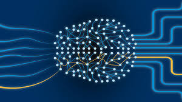

O que é deep learning?

O deep learning é um subconjunto do aprendizado de máquina orientado por redes neurais de várias camadas cujo design é inspirado na estrutura do cérebro humano. Modelos de deep learning servem de base para a maioria das inteligências artificial (IA) de última geração atualmente, desde computer vision e IA generativa até carros autônomos e robótica.
Como funciona o deep learning
As redes neurais artificiais são, em termos gerais, inspiradas no funcionamento dos circuitos neurais do cérebro humano, cujo funcionamento é impulsionado pela complexa transmissão de sinais químicos e elétricos através de redes distribuídas de células nervosas (neurônios). No deep learning, os "sinais" análogos são as saídas ponderadas de muitas operações matemáticas aninhadas, cada uma realizada por um "neurônio" artificial (ou nó), que compõem coletivamente a rede neural.
Em resumo, um modelo de deep learning pode ser entendido como uma série intrincada de equações aninhadas que mapeiam uma entrada para uma saída. Ajustar a influência relativa de equações individuais dentro dessa rede usando processos especializados de aprendizado de máquina pode, por sua vez, alterar a maneira como a rede mapeia entradas para saídas.
Estrutura de redes neurais profundas
As redes neurais artificiais compreendem camadas interconectadas de "neurônios" artificiais (ou nós), cada um dos quais realiza sua própria operação matemática (chamada de "função de ativação"). Existem muitas funções de ativação diferentes; uma rede neural geralmente incorpora múltiplas funções de ativação dentro de sua estrutura, mas normalmente todos os neurônios em uma determinada camada da rede neural serão configurados para executar a mesma função de ativação. Na maioria das neural networks, cada neurônio da camada de entrada é conectado a cada um dos neurônios da camada seguinte, que estão conectados aos neurônios da camada seguinte, e assim por diante.
A saída da ativação de cada nó contribui com parte da entrada fornecida para cada um dos nós da camada seguinte. Crucialmente, as funções de ativação realizadas em cada nó são não lineares, permitindo às redes neurais modelar padrões e dependências complexos. É o uso de funções de ativação não lineares que distingue uma rede neural profunda de um modelo de regressão linear (muito complexo).
Tipos de modelos de deep learning
Apesar de sua potência e potencial inerentes, o desempenho adequado em determinadas tarefas continua sendo impossível ou impraticável para redes neurais profundas convencionais (“vanilla”). As últimas décadas testemunharam várias inovações na arquitetura de redes neurais padrão, cada uma visando um desempenho aprimorado em tarefas e tipos de dados específicos.
Vale a pena notar que um determinado tipo de rede neural pode se prestar a vários tipos de modelos de deep learning e vice-versa. Por exemplo, um modelo de codificador automático usado para tarefas de imagem pode aproveitar uma arquitetura baseada em redes neurais; os modelos de difusão podem utilizar arquiteturas baseadas em CNN ou em transformadores.
Exemplos:
- Redes neurais convolucionais (CNNs)
- Redes neurais recorrentes (RNNs)
- Autocodificadores
- Modelos de transformador
- Modelos Mamba
- Redes adversárias generativas (GANs)